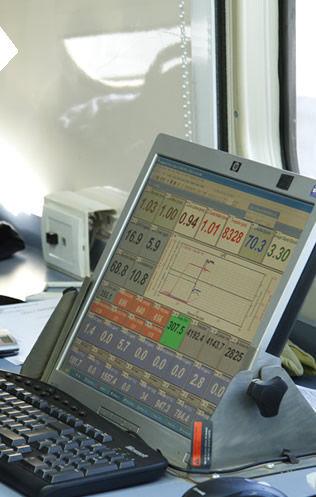

-
"Creo que lo más importante que me dio la universidad es la capacidad de razonamiento y análisis. ¿Cómo hacer esto? ¿cómo mejorarlo, optimizarlo, hacerlo en menor tiempo? En ninguno de mis trabajos tuve que aplicar una receta, la receta siempre había que inventarla. Eso es lo que más me gusta de mi trabajo de todos los días, siempre surge algo nuevo y hay que ingeniársela, eso somos los ingenieros y eso nos da satisfacción."
-Rosa de los Ángeles Zapata.
- 
Ingeniera Mecánica."Trabajo en la Dirección de Ingeniería de YPF. Audito técnicamente los documentos de las ingenierías de los proyectos, doy soporte técnico en documentos claves y verifico que los estándares de la ingeniería y las normativas que tenemos establecidas se apliquen.
Estudié en la Universidad Metropolitana de Caracas. Inicialmente me inscribí en Ingeniería Eléctrica porque me gustó mucho la física del último año de bachillerato, los circuitos y las ondas me fascinaron. Con el tiempo me empezó a gustar mas la física mecánica y me cambié a Mecánica, que para mí es la más completa de todas las ingenierías. Durante la carrera ves de todo: química, temas de fuerzas, de electricidad, de ondas y electrónica, de control y me imaginé que tenía un mayor campo de trabajo. A finales de los 70, cuando yo estudiaba, el tema de la energía estaba en la tapa de los periódicos y me empezaron a interesar las energías alternativas, ir más a la raíz de la generación de la energía.
Creo que lo más importante que me dio la universidad es la capacidad de razonamiento y análisis. ¿Cómo hacer esto? ¿cómo mejorarlo, hacerlo en menor tiempo? En ninguno de mis trabajos tuve que aplicar una receta, siempre había que inventarla. Eso es lo que más me gusta de mi trabajo, que siempre surge algo nuevo y hay que ingeniársela, eso somos los ingenieros y eso nos da satisfacción."
-Rosa de los Ángeles Zapata.
-
Ingeniera Mecánica.